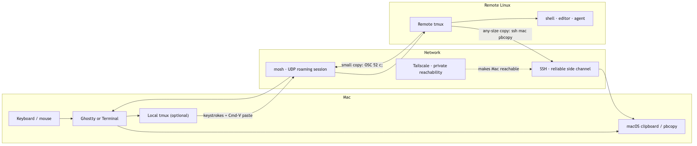

Agent development is unusually hard on a fragile terminal session. An
agent may be editing several files, running a test suite, watching logs,
or waiting on a build when Wi-Fi changes, a laptop sleeps, or an SSH
connection times out. The alexy/moshpit repository captures
a compact answer: let Ghostty own the Mac-facing terminal, let tmux own
persistent workspaces, let mosh carry the interactive session, and use
two clipboard paths—OSC 52 for convenience and SSH over Tailscale for
reliability.
This guide starts at first principles and ends with the exact daily
gestures. It documents the repository’s mac.tmux.conf,
linux.tmux.conf, linux.zprofile, and
MOSHPIT.md, plus the corresponding Mac profile and SSH
arrangement. Substitute your own key names, account names, and tailnet
hostnames. Never copy private keys into a repository.

The diagram has two return paths because the terminal is not a shared
desktop. Ordinary paste travels from the Mac clipboard into the terminal
as input. Remote copy must deliberately travel back: either as an OSC 52
terminal event through mosh, or as selection bytes sent over SSH to
pbcopy on the Mac.